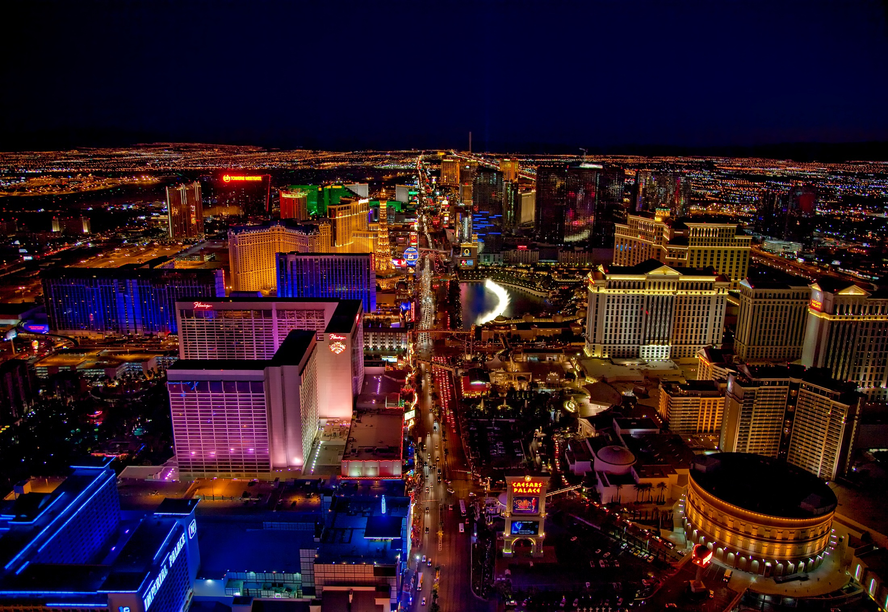
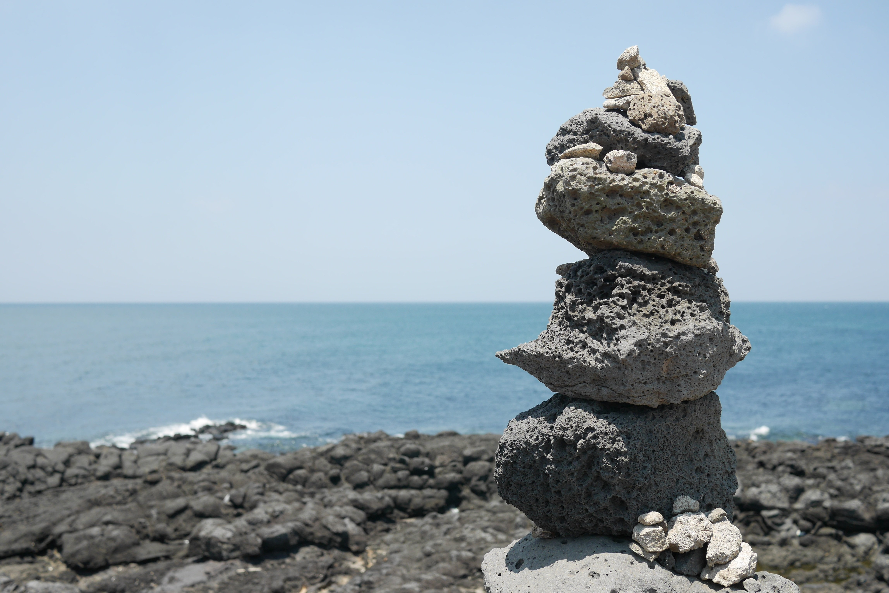

🌍 나의 여행 앨범 🎵




🗓️ 여행 일정
| 연도 | 여행지 | 주요 활동 | 기억에 남는 점 |
|---|---|---|---|
| 2024년 | 도쿄 | 도쿄타워 구경, 밤거리 산책 | 도시 야경이 가장 인상 깊었습니다. |
| 2025년 | 오사카 | 맛집 탐방, 난바 거리 구경 | 먹거리와 활기찬 분위기가 좋았습니다. |
| 2025년 | 라스베가스 | 도시 구경, 사진 촬영 | 화려한 거리와 조명이 기억에 남았습니다. |
| 2026년 | 제주도 | 바다 구경, 사진 촬영 | 아름다운 자연, 바다와 산이 기억에 남았습니다. |
📹 나의 여행 브이로그
도쿄 밤거리 ✈️